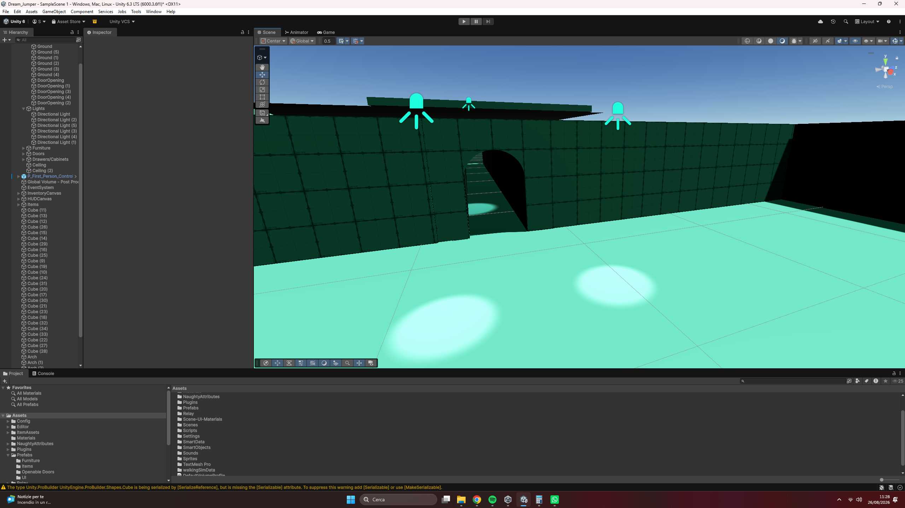

Dream Jumper
A liminal horror walking sim where every dream follows its own rules.
The player jumps through dreams that each belong to a person dear to the protagonist. There are no cutscenes: the story is told through the spaces themselves. A dream has to express and represent its owner, so the player learns who they are by exploring what the dream is made of.
- Environmental narrative. I design how each dream expresses its owner.
- Worldbuilding and story. I co-write the world and the protagonist’s story, and how that story has consequences on the game.
- Emotional tone of the music. The music supports the immersion in each owner’s emotional world.
Every layer of a level carries the owner:
- Color and lighting
- The entities that live there
- Puzzles
- Set props
Example: the pool level. It is intricate, and in places anxious, because of creatures that react to sound. The palette sits in aquamarine tones. Space, color and enemy design all say something about the person who dreams it.
Not every level is like that. Some include contemplative, artistic stretches that give the player a breather between one dream and the next.
What the player learns changes the game. The awareness meter in the HUD tracks it: green when you arrive, yellow once you have found every clue about whose dream it is, which opens the portal to the next dream. Red means total knowledge, reached when you die: the dream starts to crumble and the enemies grow more aggressive.
- The three dreams play in a random order, so each one has to work on its own, whichever the player meets first.
- Making each dream read as a different person through space, light and sound, without long dialogue.
- Keeping tone consistent with the level design.
The Pool level is blocked out and the randomized structure of the dreams work.
